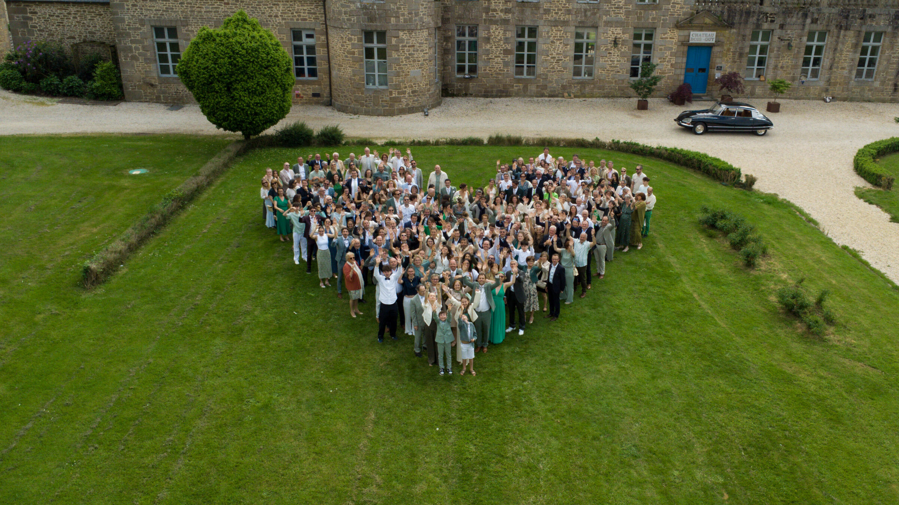
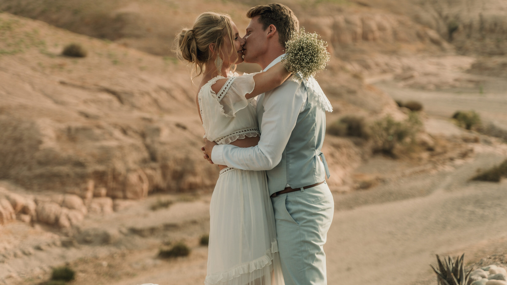
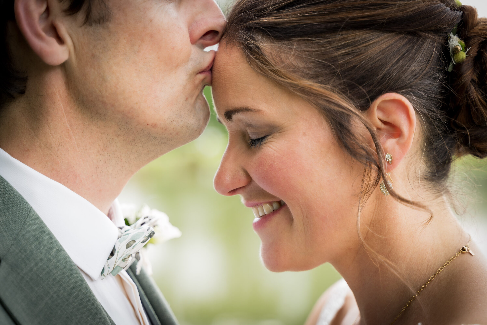
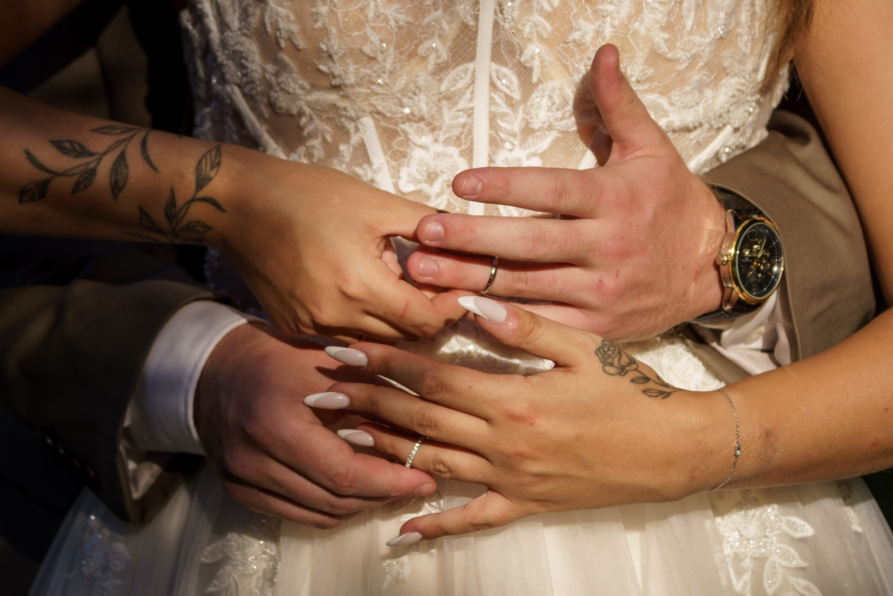
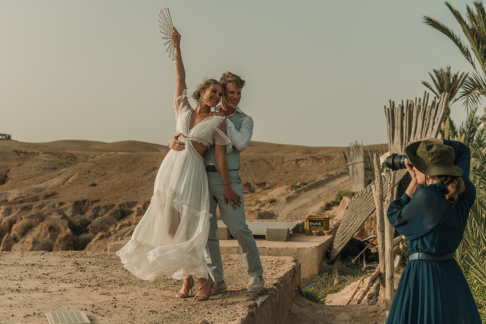
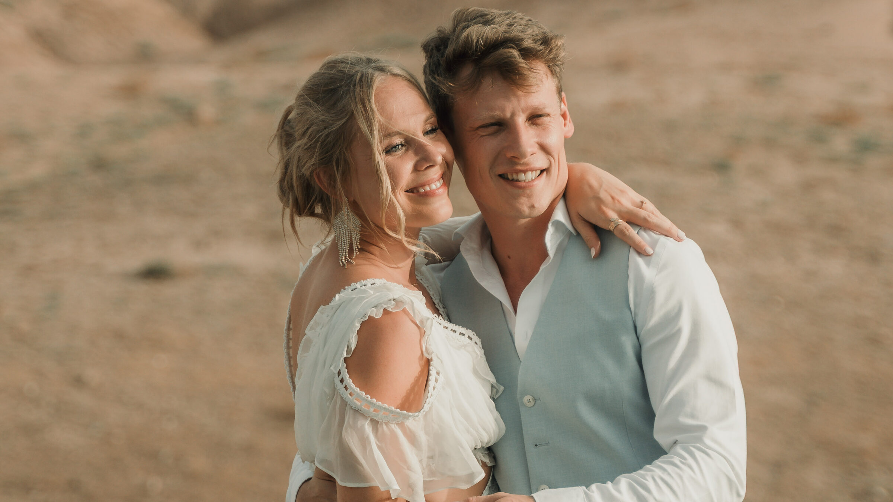
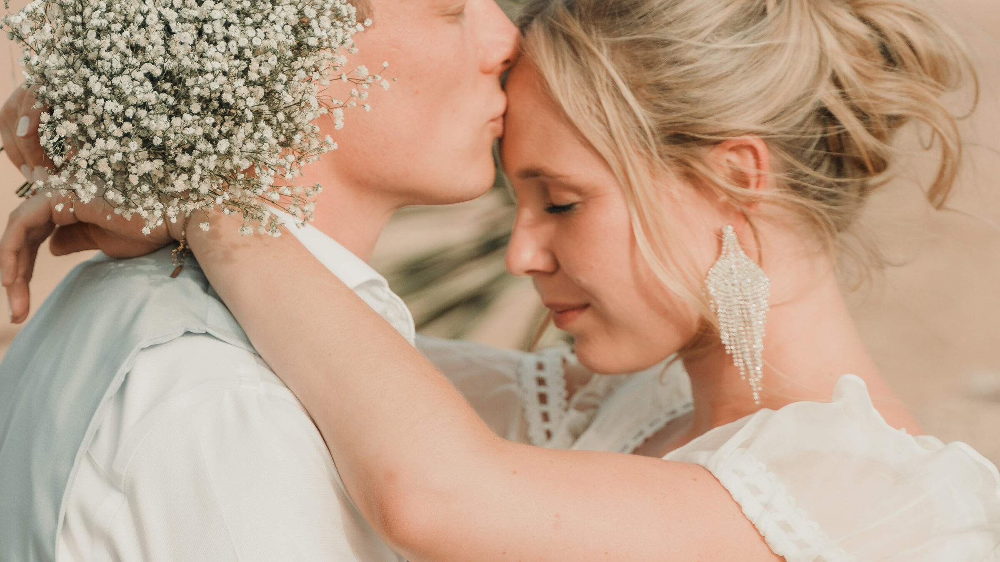
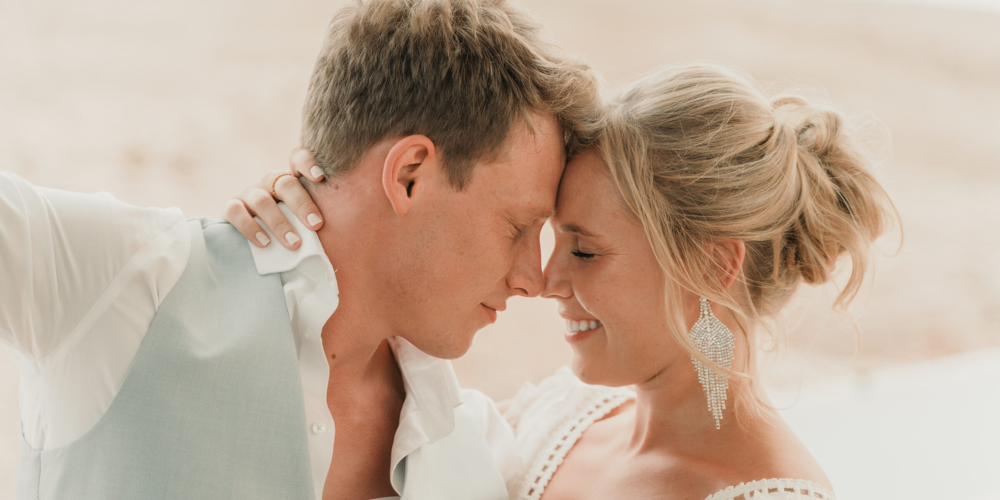
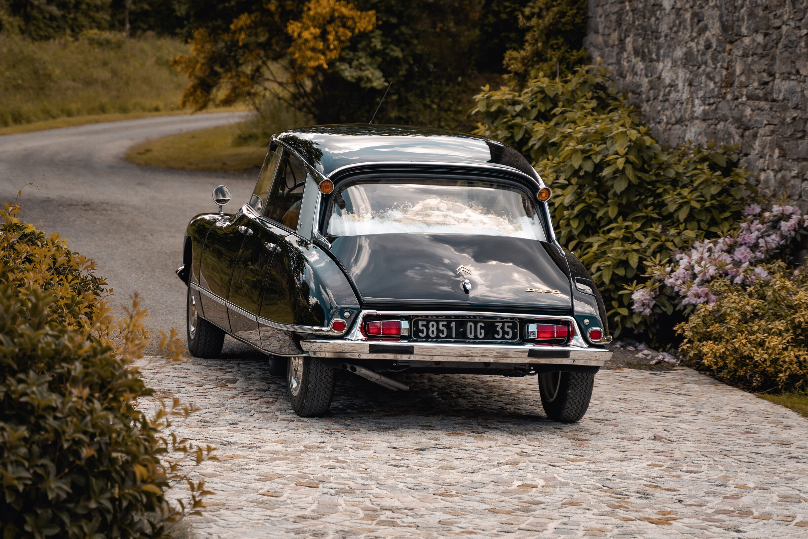

Photographie
Une couverture pensée pour raconter votre journée dans son ensemble : préparatifs, cérémonie, couple, famille, fête et tous ces détails que vous découvrirez encore des années plus tard.
L'instant · la lumière · l'émotion
PHOTO · FILM · MARIAGE
Je raconte votre mariage avec une approche à la fois discrète, sensible et cinématographique — pour que vos images vous replongent dans ce que vous avez réellement vécu.
MA PHILOSOPHIE
Votre journée n'a pas besoin d'être mise en scène en permanence. Les plus belles images naissent souvent entre deux moments : un regard, une main qui tremble légèrement, un rire qui échappe au protocole, une étreinte qui dure une seconde de plus.
Je reste attentif à tout ce qui se passe autour de vous, tout en vous laissant profiter pleinement de vos proches. Mon travail consiste à être là au bon moment, sans prendre la place de votre histoire.
En photo comme en vidéo, je recherche une esthétique intemporelle, des mouvements naturels et une lumière qui donne aux souvenirs une vraie sensation de cinéma.
Une couverture pensée pour raconter votre journée dans son ensemble : préparatifs, cérémonie, couple, famille, fête et tous ces détails que vous découvrirez encore des années plus tard.
L'instant · la lumière · l'émotionUn film vivant construit autour des regards, des voix, des gestes et de l'énergie de votre journée. L'objectif : retrouver les sensations, pas seulement les images.
Le mouvement · les voix · les souvenirsLe choix le plus complet pour conserver votre mariage sous deux formes complémentaires : des photographies à transmettre et un film à revivre.
Une histoire · deux façons de la revivre
GALERIE







FILMS DE MARIAGE
COMMENT JE TRAVAILLE
Nous échangeons sur votre journée, vos envies, les lieux et les moments qui comptent pour vous.
Je me fonds dans la journée pour privilégier les moments spontanés et vous laisser vivre pleinement.
Je sélectionne, construis et travaille vos images avec la même attention portée au récit et à l'esthétique.
Vous recevez des souvenirs conçus pour être regardés, partagés et conservés longtemps.
« Le but n'est pas de fabriquer le souvenir parfait. C'est de vous permettre de ressentir à nouveau le vrai. »
Jérémy Chouibkhi · Photographe & cinéaste
AVANT DE SE RENCONTRER
Les trois formats sont possibles. Nous pouvons construire ensemble une couverture adaptée à votre journée et à vos priorités.
Je privilégie le naturel. Je peux bien sûr vous guider lorsque c'est nécessaire, notamment pour quelques portraits de couple, sans transformer la journée en séance photo permanente.
Le plus tôt possible pour vérifier la disponibilité de votre date. Un premier échange suffit pour commencer à imaginer votre reportage.
Chaque mariage étant différent, je préfère vous proposer une formule cohérente avec votre journée plutôt qu'un catalogue impersonnel. Demandez un devis ci-dessous.
VOTRE DATE · VOTRE HISTOIRE
Racontez-moi votre date, votre lieu et ce que vous imaginez pour votre mariage — je reviens vers vous rapidement avec une proposition sur mesure.
VOTRE DATE · VOTRE HISTOIRE
Racontez-moi votre projet, votre date et ce que vous imaginez. Je vous répondrai avec plaisir pour échanger autour de votre mariage.
Demander un échange →